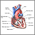
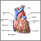
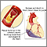
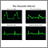
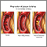
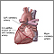
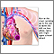

A heart attack occurs when blood flow to a part of your heart is blocked for a long enough time that part of the heart muscle is damaged or dies. The medical term for this is myocardial infarction.
Definition
Alternative Names
Myocardial infarction; MI; Acute MI; ST-elevation myocardial infarction; Non-ST-elevation myocardial infarction
Causes, incidence, and risk factors
Most heart attacks are caused by a blood clot that blocks one of the coronary arteries. The coronary arteries bring blood and oxygen to the heart. If the blood flow is blocked, the heart is starved of oxygen and heart cells die.
A hard substance called plaque can build up in the walls of your coronary arteries. This plaque is made up of cholesterol and other cells.
A heart attack may occur when:
- Blood platelets stick to tears in the plaque and form a blood clot that blocks blood from flowing to the heart. This is the most common cause of heart attacks.
- A slow buildup of this plaque may almost block one of your coronary arteries.
The cause of heart attacks is not always known. Heart attacks may occur:
- When you are resting or asleep
- After a sudden increase in physical activity
- When you are active outside in cold weather
- After sudden, severe emotional or physical stress, including an illness
Symptoms
A heart attack is a medical emergency. If you have symptoms of a heart attack, call 911 or your local emergency number right away.
- DO NOT try to drive yourself to the hospital.
- DO NOT WAIT. You are at greatest risk of sudden death in the early hours of a heart attack.
Chest pain is the most common symptom of a heart attack. You may feel the pain in only one part of your body, or it may move from your chest to your arms, shoulder, neck, teeth, jaw, belly area, or back.
The pain can be severe or mild. It can feel like:
- A tight band around the chest
- Bad indigestion
- Something heavy sitting on your chest
- Squeezing or heavy pressure
The pain usually lasts longer than 20 minutes. Rest and a medicine called nitroglycerin may not completely relieve the pain of a heart attack. Symptoms may also go away and come back.
Other symptoms of a heart attack can include:
- Anxiety
- Cough
- Fainting
- Light-headedness, dizziness
- Nausea or vomiting
- Palpitations (feeling like your heart is beating too fast or irregularly)
- Shortness of breath
- Sweating, which may be very heavy
Some people (the elderly, people with diabetes, and women) may have little or no chest pain. Or, they may have unusual symptoms (shortness of breath, fatigue, and weakness). A "silent heart attack" is a heart attack with no symptoms.
Signs and tests
A doctor or nurse will perform a physical exam and listen to your chest using a stethoscope.
- The doctor may hear abnormal sounds in your lungs (called crackles), a heart murmur, or other abnormal sounds.
- You may have a fast or uneven pulse.
- Your blood pressure may be normal, high, or low.
You will have an electrocardiogram (ECG) to look for heart damage. A troponin blood test can show if you have heart tissue damage. This test can confirm that you are having a heart attack.
Coronary angiography may be done right away or when you are more stable.- This test uses a special dye and x-rays to see how blood flows through your heart.
- It can help your doctor decide which treatments you need next.
Other tests to look at your heart that may be done while you are in the hospital:
Treatment
In the emergency room:
- You will be hooked up to a heart monitor, so the health care team can look at how your heart is beating.
- You will receive oxygen so that your heart doesn't have to work as hard.
- An intravenous line (IV) will be placed into one of your veins. Medicines and fluids pass through this IV.
- You may get nitroglycerin and morphine to help reduce chest pain.
- You may receive aspirin, unless it would not be safe for you. In that case, you will be given another medicine that prevents blood clots.
- Dangerous abnormal heartbeats (arrhythmias) may be treated with medicine or electric shocks.
EMERGENCY TREATMENTS
Angioplasty is a procedure to open narrowed or blocked blood vessels that supply blood to the heart.
- Angioplasty is often the first choice of treatment. It should be done within 90 minutes after you get to the hospital, and no later than 12 hours after a heart attack.
- A stent is a small, metal mesh tube that opens up (expands) inside a coronary artery. A stent is often placed after angioplasty. It helps prevent the artery from closing up again.
You may be given drugs to break up the clot. It is best if these drugs are given within 3 hours of when you first felt the chest pain. This is called thrombolytic therapy.
Some patients may also have heart bypass surgery to open narrowed or blocked blood vessels that supply blood to the heart. This procedure is also called open heart surgery.
AFTER YOUR HEART ATTACK
After several days, you will be discharged from the hospital.
You will likely need to take medicines, possibly for the rest of your life. Always talk to your health care provider before stopping or changing how you take any medicines.
While under the care of your health care team, you will learn:
- How to take medicines to treat your heart problem and prevent more heart attacks
- How to eat a heart-healthy diet
- How to be active and exercise safely
- What to do when you have chest pain
- How to stop smoking
After a heart attack, you may feel sad. You may feel anxious and worry about being careful about everything you do. All of these feelings are normal. They go away for most people after 2 or 3 weeks. You may also feel tired when you leave the hospital to go home.
Most people who have had a heart attack take part in a cardiac rehab program.
Support Groups
Expectations (prognosis)
After a heart attack, your chance of having another one is higher than if you never had a heart attack.
How well you do after a heart attack depends on the damage to your heart muscle and heart valves, and where that damage is located.
If your heart can no longer pump blood out to your body as well as it used to, you may develop heart failure. Abnormal heart rhythms can occur, and they can be life threatening.
Usually a person who has had a heart attack can slowly go back to normal activities, including sexual activity. Discuss your activity level with your health care provider.
Complications
Calling your health care provider
Prevention
Related

Heart, section through the middle

Heart, front view

Acute MI

Post myocardial infarction ECG wave tracings

Progressive build-up of plaque in coronary artery

Posterior heart arteries

Anterior heart arteries

Heart attack symptoms
References
Anderson JL. ST segment elevation acute myocardial infarction and complications of myocardial infarction. In: Goldman L, Schafer AI, eds. Cecil Medicine. Philadelphia, Pa: Saunders Elsevier; 2011:chap 73.
Antman EM. ST-segment elevation myocardial infarction: pathology, pathophysiology, and clinical features. In: Bonow RO, Mann DL, Zipes DP, Libby P, eds. Braunwald's Heart Disease: A Textbook of Cardiovascular Medicine. 9th ed. Philadelphia, Pa: Saunders Elsever; 2011:chap 54.
Cannon CP, Braunwald E. Unstable angina and non-ST elevation myocardial infarction. In: Bonow RO, Mann DL, Zipes DP, Libby P, eds. Braunwald's Heart Disease: A Textbook of Cardiovascular Medicine. 9th ed. Philadelphia, Pa: Saunders Elsever; 2011:chap 56.
Kushner FG, Hand M, Smith SC Jr, King SB 3rd, Anderson JL, Antman EM, et al. 2009 Focused Updates: ACC/AHA Guidelines for the Management of Patients WithST-Elevation Myocardial Infarction (updating the 2004 Guideline and 2007 Focused Update) and ACC/AHA/SCAI Guidelines on Percutaneous Coronary Intervention(updating the 2005 Guideline and 2007 Focused Update): a report of the American College of Cardiology Foundation/American Heart Association Task Force on Practice Guidelines. Circulation. 2009 Dec 1;120(22):2271-306. Epub 2009 Nov 18.
Wright RS, Anderson JL, Adams CD, et al. 2011 ACCF/AHA Focused Update of the Guidelines for the Management of Patients with Unstable Angina/Non-ST-Elevation Myocardial Infarction (Updating the 2007 Guideline). A Report of the American College of Cardiology Foundation/American Heart Association Task Force on Practice Guidelines Developed in Collaboration With the American College of Emergency Physicians, Society for Cardiovascular Angiograpy and Interventions, and Society of Thoracic Surgeons. J Am Coll Cardiol. 2011;57:1920-1959.